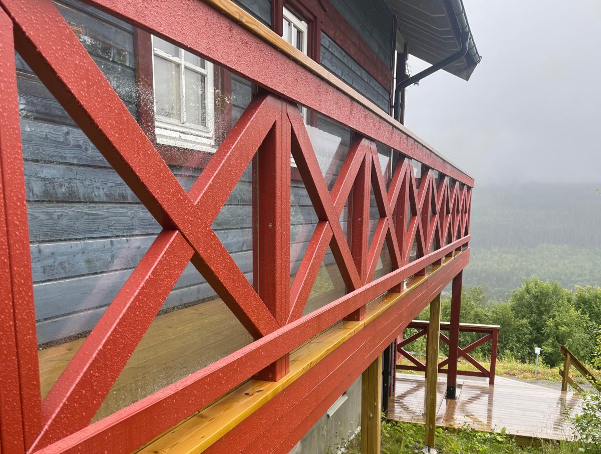
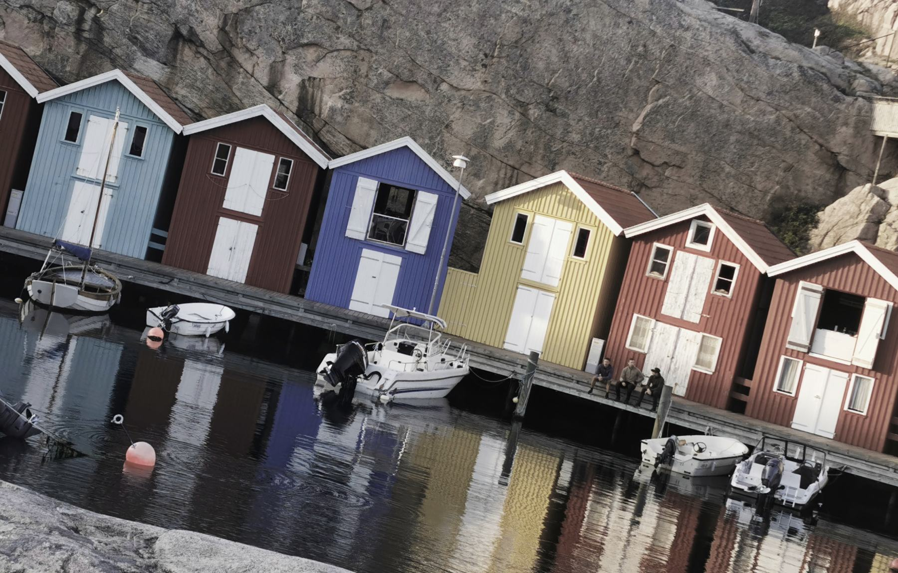
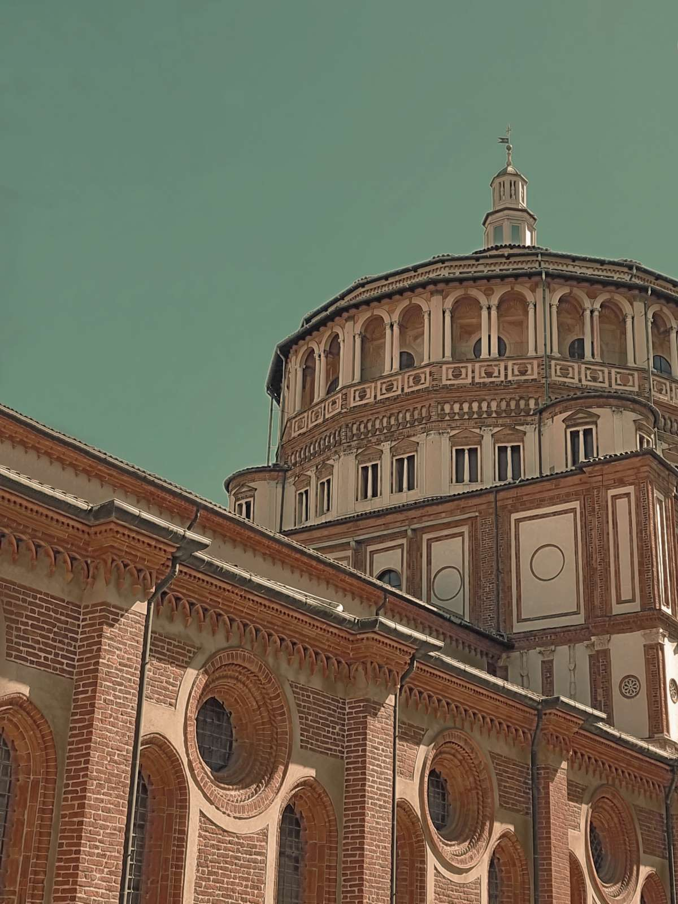
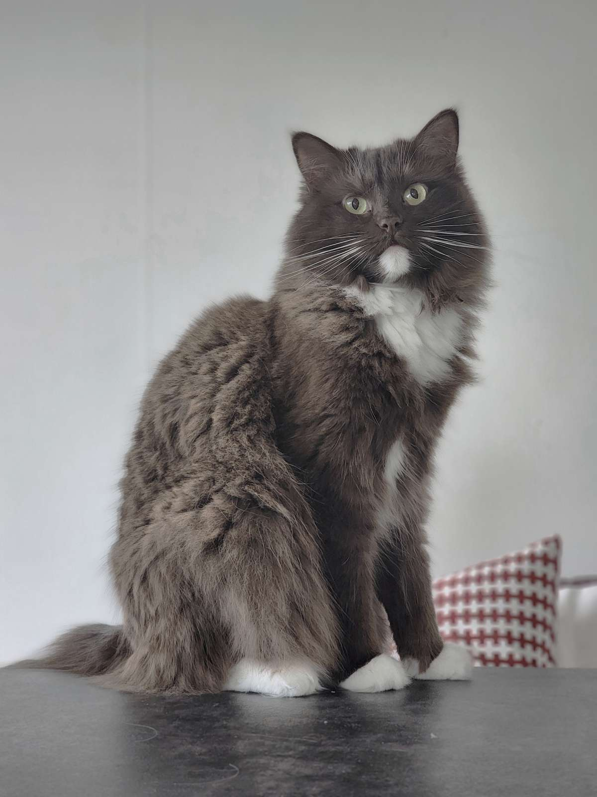

Alexandras bildserie
Om uppgiften
Detta är en uppgift som innehåller flera moment. Ett moment är att skapa en webbplats och ett annat moment är att redigera och skapa bilder för webbplatsen.
Jag har använt Photopea för all bildredigering och Figma för att skapa layouten för webbplatsen.
Till bildredigeringenBildserien
De redigerade bilderna


